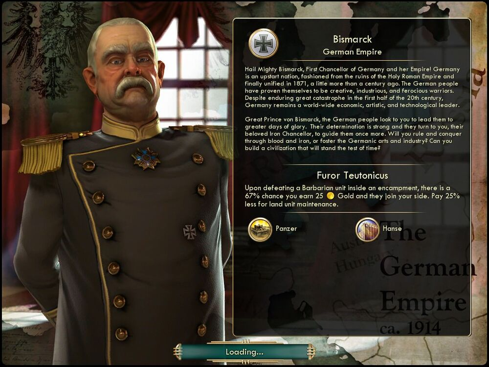

비스마르크 Bismarck독일 Germany |
|  |
| 독일 제국의 초대 수상, 위대한 비스마르크에 경의를! 독일은 신성 로마 제국의 폐허에서 탄생한 신생 국가로 한 세기 조금 더 전인 1871년에 마침내 통일됐습니다. 독일인은 그들이 창의적이고 성실하면서도 잔인한 전사임을 입증했습니다. 20세기 전반 큰 위기를 겪었음에도, 독일은 여전히 세계의 경제와 예술, 기술을 선도하고 있습니다.
위대한 비스마르크여, 독일인은 그대의 지도 하에 다시금 영광을 되찾고 싶어합니다. 독일인은 결의를 굳게 다지며, 존경해 마지않는 철혈 재상이 다시금 독일을 이끌어주리라 기대하고 있습니다. 철과 피로써 지배하고 정복하겠습니까, 아니면 게르만의 예술과 산업을 장려하고 세월의 시련을 이겨낼 문명을 건설해 주시겠습니까? |
| 속성 | |
|---|---|
| 특성 |
튜튼(게르만)의 분노
(Furor Teutonicus) 야만인 주둔지 내의 야만인을 처치하면 67%의 확률로 야만인이 금 25와 함께 당신의 문명에 합류합니다. 지상 유닛의 유지비가 25% 감소합니다. |
| 고유유닛 |
팬저
(Panzer) 전차 대체 유닛입니다. 전투력 70에서 80으로 증가합니다. 이동력이 +1 증가합니다. |
| 고유건물 |
한자
(Hanse) 은행 대체 건물입니다. 은행의 기존 효과와 더불어 문명과 연결된 도시 국가와의 교역로 하나당 생산력 5% 증가합니다. |
| (구)고유유닛 |
란츠크네히트
(Landsknecht) 장창병 대체 유닛입니다. 생산 비용 90에서 45로 감소됩니다. 도시 점령 시 추가 약탈금을 제공합니다. |